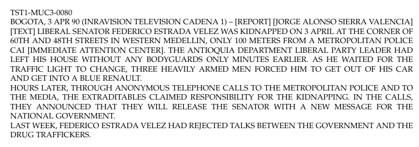
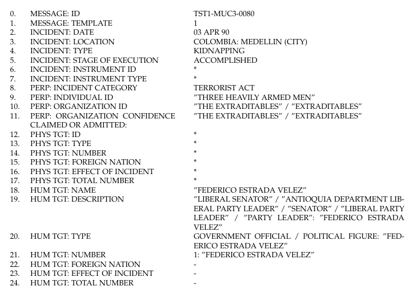

1. Document Understanding and Information Extraction Overview¶
Document understanding (DU) is the ability of system to process documents automatically. It includes technologies that can interpret and extract text and meaning from a wide range of document types including structured, semi-structured and unstructured that can interpret and extract text and meaning from a wide range of document types including structured, semi-structured and unstructured.
DU models take in documents and segment pages of documents into useful parts (i.e. regions corresponding to a specific table or property), often using optical character recognition (OCR) with some level of document layout analysis. These methods use this information to understand the contents of the document at large, e.g. that this region or bounding box corresponds to an address or a news article.
Some examples of DU topics are the following research tasks:
Document Layout Analysis (DLA) — A computer-vision based document layout analysis module, which partitions each document page into distinct content regions. This model not only delineates between relevant and irrelevant regions, but also serves to categorize the type of content it identifies.
Optical Character Recognition (OCR) — The purpose of this step is to extract text from images or PDF files by faithfully transcribing all written text present in the document.
Information extraction (IE) is the process of converting unstructured text into a structured data base containing selected information from the text. It is an essential step in making the information content of the text usable for further processing. These models generrally use the output of OCR or document layout analysis to comprehend and identify relationships between the information that is being conveyed in the document. Usually specialized to a particular domain and task, these models provide the structure necessary to make a document machine readable, providing utility in document understanding.
Document Semantic Enrichment (DSE) - This process uses the extracted data from the previous step.These annotations are used to enrich the document metadata and to provide new types of visualizations in an information retrieval context.
Information Extraction History¶
Information extraction dates back to the late 1970s in the early days of NLP with the development of a system named JASPER (Journalist’s Assistant for Preparing Earnings Reports) Andersen et al. 1992 meant to analyze a live feed of company press releases, and then to identify which of those releases contain information on company earnings and dividends, and for those releases, to extract a predetermined set of information, so that, finally, to provide real-time financial news to financial traders (so the traders will have he edge in the very competitive real-time financial news market).
Most of the text values that JASPER extracted was numbers (net income, per share income, revenues, sales, average number of shares outstanding, etc.) and these values were declared as a template in which each slot should be filled with an extracted value. For each slot in the template, the system (JASPER) tried to match against each sentence an associated set of patterns of words; if any of the patterns matched, a procedure, or extraction method, also associated with the particular slot, was called to decide whether the patterns which matched can be used to assign a value to the slot.
This type of method was basically a rule-based method, which were particularly common to most of the systems that were first developed for extracting information from unstructured text.
Once with the appeareance of the web of documents (Internet, the information explosion of the last decade has placed increasing demands on processing and analyzing large volumes of online data. In response, the Advanced Research Projects Agency (ARPA) has been supporting research to develop a new technology called IE, and, as follows, a series of conferences/campaings starting working towards the definition of the tasks of IE and its evaluation. These started in 1988 as follows:
MUC (Message Understanding Conference) begun in 1988 to find a way to evaluate IE, the MUCs established IE as a major application of NLP (Sundheim 1996).
ACE (Automatic Content Extraction) replaced the filling of one complex and task-specific template with a few dozen more general relations and events. Produced lots of annotated training data, fostering development of supervised methods (Doddington et al. 2004).
TAC-KBP (Text Analysis Conference - Knowledge Base Population) increased the scale of the data to be processed, with the goal of creating a unified data base connecting tens of thousands of entities with about 40 relations and then answering questions about selected entities. These conferences provided minimal annotated training data, thereby encouraging semi-supervised methods (Ji and Grishman 2011).
MUC (Message Understanding Conference) 1988 - 1996¶
The first campaign was the Message Understanding Conference (MUC-1) in 1988 and it was organized as more of a meeting to discuss how IE might be evaluated. As previously experimented (JASPER), at this meeting, there was agreement on the need for a shared template capturing the most important information in a document. First two campaings, MUC-1 and MUC-2, invited participants to submit filled templates extracted from Navy exercise message traffic texts. MUC-3 finally agreed on scoring using recall, precision, and F measure (F measure, the harmonic mean of recall and precision, was suggested as the primary metric for assigning a rank to participating systems.)
MUC-3 used news about terrorism in Latin America, and they provided an annotated corpora with texts and filled templates for the evaluation:  The documents were all uppercase as in the image above. 
MUC-3 proposed the extraction of different text excepts to fill several types of templates (bombings, arsons, kidnappings, killings, attacks, etc.). The “/” separates alternative correct slot fills. The templates were substantially more complex than in prior years. The participants were required to develop a complete system to fill these templates, that were further refferred as event templates. The template to fill consisted in: the detection of the date of the event (03 APR 90), the location (COLOMBIA: MEDELLIN), the type of the event (kidnapping) … the perpetrator (THREE HEAVILY ARMED MEN), the human target (FEDERICO ESTRADA VELEZ), etc. The participating systems should have been able to fill all the slots.
Next, because the results were rather low, the other campaings (.. MUC-5, MUC-6) started to require several component subsystems. For example, MUC-6 split off different tasks, with separate evaluations:
Named Entity Recognition (NER)
Relation Extraction (RE)
Event Extraction (EE)
etc.
Further, these newly defined more general independent tasks drew greater attention, because they were more feasible to plug and play: a system can detect the perpetrators, the human targets, the location and the date; another system can detect the type of the event, etc.